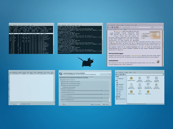

Skippy-XD
Dieser Artikel wurde für die folgenden Ubuntu-Versionen getestet:
Ubuntu 16.04 Xenial Xerus
Ubuntu 14.04 Trusty Tahr
Zum Verständnis dieses Artikels sind folgende Seiten hilfreich:
Zu den Grundfunktionen einer Desktop-Umgebung gehört der Umgang mit mehreren Programmfenstern. Wer mit vielen Fenstern hantiert, kennt das Problem: das Umschalten zwischen Programmen wird umso komplexer, je mehr Fenster geöffnet sind. Dann hilft ein Vollbild-Vorschaumodus mit einer Übersicht der gestarteten Programme, wobei das gewünschte einfach mit der Maus ausgewählt wird. Dieser Effekt wird meist als Exposé bezeichnet - der Name, unter dem er erstmals bei Mac OS X eingeführt wurde. Im Regelfall wählt man eine bestimmte Tastenkombination für den leichten Zugriff auf diese Funktion aus.
Skippy-XD  bietet einen solchen Effekt zum einfacheren Task-Wechsel. Das Programm wurde für die Desktop-Umgebungen Xfce und LXDE sowie für alleinstehende Fenstermanager wie z.B. Openbox konzipiert. Inwieweit es unter anderen Oberflächen eingesetzt werden kann, ist unbekannt (teilweise ist in diesen ein Expose-Effekt bereits integriert).
bietet einen solchen Effekt zum einfacheren Task-Wechsel. Das Programm wurde für die Desktop-Umgebungen Xfce und LXDE sowie für alleinstehende Fenstermanager wie z.B. Openbox konzipiert. Inwieweit es unter anderen Oberflächen eingesetzt werden kann, ist unbekannt (teilweise ist in diesen ein Expose-Effekt bereits integriert).

Voraussetzungen¶
Zwingende Voraussetzung ist ein aktiver Composite-Manager. Während Xfce einen solchen bereits mitbringt, muss man bei LXDE und Openbox zuerst ein entsprechendes Programm nachinstallieren.
Installation¶
 Das Programm ist nicht in den offiziellen Paketquellen enthalten. Daher muss man auf ein "Personal Package Archiv" (PPA) [1] ausweichen.
Das Programm ist nicht in den offiziellen Paketquellen enthalten. Daher muss man auf ein "Personal Package Archiv" (PPA) [1] ausweichen.
PPA¶
Adresszeile zum Hinzufügen des PPAs:
ppa:landronimirc/skippy-xd-daily
Hinweis!
Zusätzliche Fremdquellen können das System gefährden.
Ein PPA unterstützt nicht zwangsläufig alle Ubuntu-Versionen. Weitere Informationen sind der  PPA-Beschreibung des Eigentümers/Teams landronimirc zu entnehmen.
PPA-Beschreibung des Eigentümers/Teams landronimirc zu entnehmen.
Damit Pakete aus dem PPA genutzt werden können, müssen die Paketquellen neu eingelesen werden.
Nach dem Aktualisieren der Paketquellen kann folgendes Paket installiert werden [2]:
skippy-xd (ppa)
 mit apturl
mit apturl
Paketliste zum Kopieren:
sudo apt-get install skippy-xd
sudo aptitude install skippy-xd
Konfiguration¶
Nach der Installation muss man für Skippy-XD nur noch eine geeignete Tastenkombination finden, die den Befehl skippy-xd aufruft.
Lubuntu¶
Man bearbeitet die Datei ~/.config/openbox/lubuntu-rc.xml mit einem Editor [3] und fügt unterhalb der Zeile:
<chainQuitKey>C-g</chainQuitKey>
die Tastenkombination Windows + W über folgenden Abschnitt hinzu:
<!-- Start Expose for LXDE--> <keybind key="W-w"> <action name="Execute"> <command>skippy-xd</command> </action> </keybind> <!-- End Expose for LXDE-->
Anschließend meldet man sich ab und wieder neu an.
Xubuntu¶
Hier kann der Einstellungsmanager verwendet werden, um die Tastenkombination Windows + S zuzuordnen ( Windows + W ist bei Xubuntu für Firefox reserviert).
Einstellungen¶
Obwohl spezielle Einstelungen nicht unbedingt erforderlich sind, kann man die Datei /etc/xdg/skippy-xd.rc nach ~/.config/skippy-xd/skippy-xd.rc kopieren und an die eigenen Bedürfnisse anpassen. Die in der Datei enthaltene englische Dokumentation und der Artikel Skippy zur Vorgängerversion helfen dabei weiter.
Links¶
Skippy
im Ubuntu-WikiSkippy-XD (Exposé like behaviour)
- Blogbeitrag, 11/2012Desktop
 Übersichtsartikel
Übersichtsartikel
- Erstellt mit Inyoka
-
 2004 – 2017 ubuntuusers.de • Einige Rechte vorbehalten
2004 – 2017 ubuntuusers.de • Einige Rechte vorbehalten
Lizenz • Kontakt • Datenschutz • Impressum • Serverstatus -
Serverhousing gespendet von